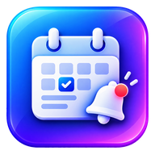

Smarter reminders
Choose the first alert's date and time. Daily follow-ups appear when you sign in, not in the middle of a game or call.

Assignment Reminder WINDOWS DESKTOPKeep every deadline, working file and reference link in one place. Your reminders are local, and the interface can change with your favorite theme.
No account needed for local assignment tracking. Windows 10/11 desktop.Choose the first alert's date and time. Daily follow-ups appear when you sign in, not in the middle of a game or call.
Open assignment files and saved links without searching through folders and bookmarks.
Choose the familiar Classic look or install compatible external PySide6 theme packages.
Visual styles can be added separately from the main application.
Focused and familiar.
A calmer evening workspace.
A galaxy-inspired desktop look.
Download themeDownload the installer or portable ZIP from the official GitHub release page when the first build is published.
The website is ready. A verified Windows build has not yet been uploaded.
Download the installer from a published GitHub Release and follow the Windows prompts.
When an update is published, Assignment Reminder can show a small optional banner linking to its release page.
Launch from your Windows Start Menu or desktop shortcut. An ordinary website cannot detect all installed apps.
Use Windows Settings → Apps → Installed apps → Assignment Reminder → Uninstall.
An unsigned beta installer may trigger Windows Smart App Control or SmartScreen. A website does not bypass Windows security checks.